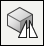

Mirror a part
-
Choose Home tab→Pattern group→Mirror list→Mirror Copy Part.

-
Select the elements you want to mirror.
-
Define the plane about which you want to mirror the selected elements.
-
Finish the feature.
Tip:
-
When you mirror the design model, if the mirrored copy touches the original part, they are combined into one part automatically.
-
You can use the options on the command bar to specify what you want to mirror. You can mirror the entire design model, construction surfaces, sketches, faces and so on. You can only mirror one element type each time you use the command.